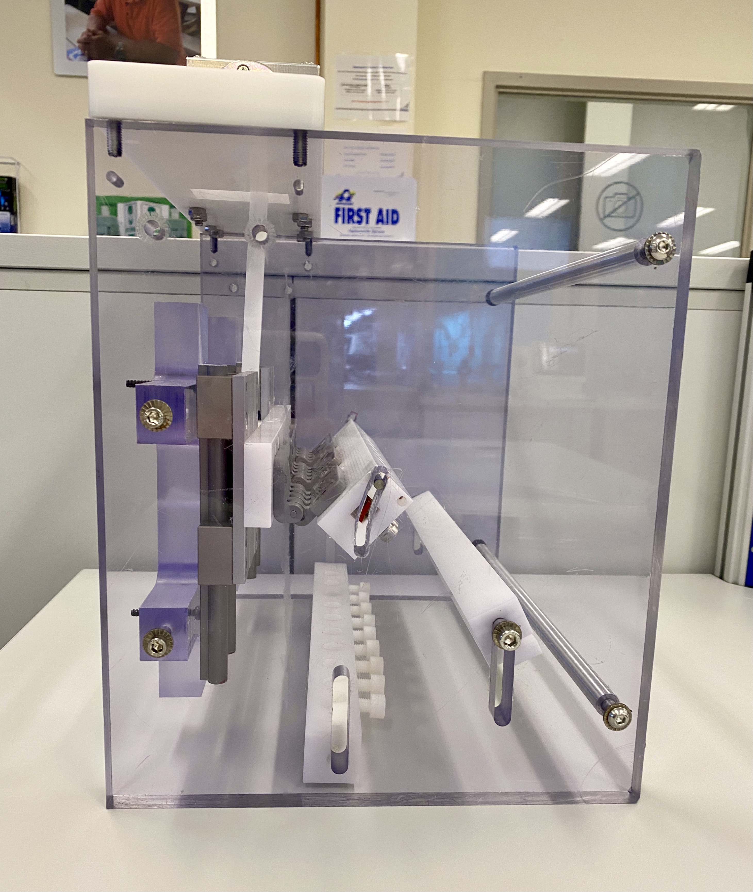
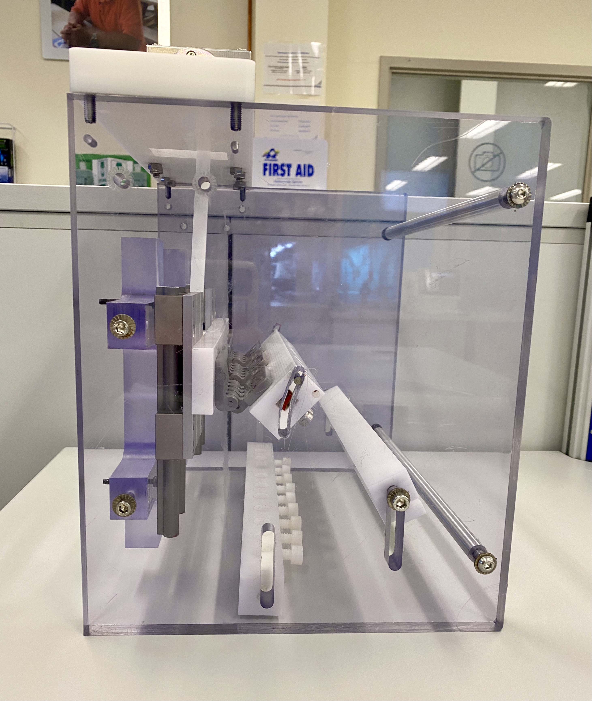

Currently, there isn’t yet a way to provide visual stimuli to both eyes simultaneously and individually to see which side of the brain has stronger results (contralateral vs ipsilateral).
To design and build visual stimulus goggles for ultra-high field (7 Tesla) MRI for high resolution studies of functional organization of visual cortex using SOLIDWORKS, Arduino, and EAGLE. The goggles must be electromagnetically compatible to a high-res 7T MRI, compact, able to control color, able to adjust luminance, provide motion stimulus, and binocularly adjustable.

After working with my boss on the technical requirements of electronics that are 7T MRI compatible, I started to brainstorm some ideas. Then, I designed the goggle frame using SOLIDWORKS. The goggle frames include strain relief
clamps for
the wires, as well as a slit for a diffuser. The goggles were curved in a way to help provide full coverage around the patient’s head - cleanable, hygienic padding will be added.
I searched online for compact, non-magnetic LEDs with a voltage and current in our range. After finalizing all of our electrical components, the schematic and PCB board design were made in EAGLE. The PCB board was then sent out to
be
manufactured - currently waiting on PCB arrival.


Curently still in progress.


A new and updated generation of the cyclic bend fixture needs to be created and documented into the company system.
To make design changes to the current cyclic bend anatomical loading fixture to improve upon fixture stability and the motion of the pump in the fixture, and to overall meet the design requirements of the fixture.
I was tasked with updating and improving upon an unfinished version of this cyclic bend fixture done by a prior
colleague.
After working with my mentor on the technical and design requirements of the fixture,
I performed a shape analysis on how the heart pump would move in the current version of the fixture compared to
clinical scenarios. Following the shape analysis, I started to brainstorm some design change ideas and areas of improvement.
The initial design of the motor housing caused instability and movement to the rest of the fixture,
so I designed various ways to stabilize the motor wobble using SOLIDWORKS.
In addition, the moving components seemed to be connected by just a screw and a nut.
However the friction between all the moving components would cause material wear on Delrin components, loosening of the screw and nut, and a loud screeching noise.
Therefore, I designed a way to incorporate a small shaft and make a linkage to avoid such issues.
It was important to understand material selection, mainly because of two factors:
the fixture will be placed in warm water for 28 days and the fixture has many moving components.
After finalizing all of the components, I was able to get these parts sent out for quick manufacturing
and test the fixture in-house.


The air permeability testing fixture successfully accomplished its design goals. The fixture was quick and easy to use, had a proper vacuum seal, and provided accurate results!
 

|
Copyright © Jen Yeo 2022 |